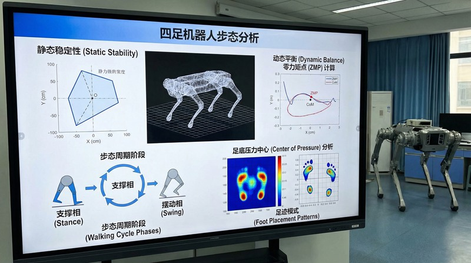
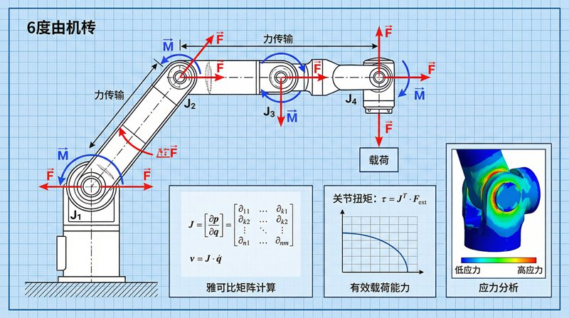
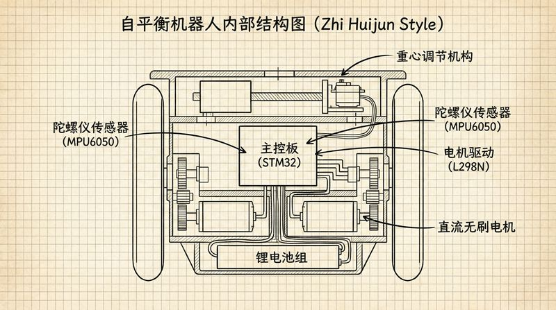

返回课程列表
第三课
运动学
机械臂与机器人的运动学
⏱️ 约50分钟
机械臂的每一个关节都是一个运动学问题。给定末端位置，计算各关节角度（逆运动学）是机器人控制的核心挑战。

机械臂的运动学
机械臂由多个连杆和关节组成。正运动学根据关节角度计算末端位置，逆运动学根据目标位置计算关节角度。

DIY机械臂的运动学
机械臂运动学的关键概念：
- 自由度：6自由度机械臂可以到达工作空间内的任意位置和姿态
- DH参数：描述相邻关节间几何关系的4个参数
- 正运动学：已知6个关节角度→计算末端位置，有唯一解
- 逆运动学：已知目标位置→计算关节角度，可能有多个解
无人机的飞行运动学
四旋翼无人机通过4个电机的差速旋转实现六自由度运动。俯仰、横滚、偏航和升降都由电机转速组合控制。

四旋翼的运动控制
无人机飞行的运动学原理：
- 悬停：4个电机转速相同，总升力等于重力
- 前进：前两个电机减速、后两个加速，产生前倾力矩
- 侧移：左右电机差速旋转，产生侧倾力矩
- 旋转：对角电机同向加速，利用反扭矩实现偏航